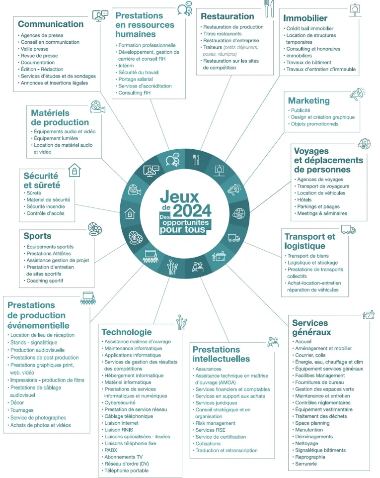

Paris 2024, loin d'être seulement un regroupement sportif, projette des ambitions dans le domaine économique, et tout particulièrement dans le domaine de l'emploi.
Au cours de ces jeux olympiques, c'est près de 181 000 emplois qui seront mobilisés dans plusieurs secteurs d'activité différents, dont des secteurs ayant été durement touchés lors de la crise sanitaire. On y retrouve la communication, les ressources humaines, la restauration, l'immobilier, le marketing, les moyens de déplacement, le transport et la logistique, les services généraux, les prestations intellectuelles, la technologie, l'événementiel, le sport, la sécurité et sûreté et les matériels de production.
Paris 2024 établit un lien particulier avec les acteurs de l'emploi, de la formation et de l'insertion, et cela dès 2019, pour préparer au mieux cette mission. Pour cela, il a été fait un recensement des emplois et des opportunités qui pourraient être liés aux JO par le cabinet Amnyos et le Centre de Droit et d'Economie du Sport. Aussi les partenaires de Paris 2024 et pôle emploi ont ouvert la plateforme EMPLOIS 2024, qui liste les offres d'emplois en lien avec PARIS 2024, pour les rendre accessibles à tous et notamment à ceux pour qui il est difficile de se réinsérer professionnellement. La plateforme a aussi pour objectif d'accompagner les demandeurs à travers des formations.
Les plus jeunes seront de la partie avec des opportunités de stages pour les collégiens et lycéens, une opportunité particulière pour découvrir le monde de l'emploi.
Un autre projet, “Demain avec Elles” , vise quant à lui à l'insertion professionnelle des jeunes filles issues de quartiers prioritaires, le but étant de féminiser le monde sportif et professionnel.
Cependant, certains rapportent regrettent l'écart de durée des contrats récemment signés, craignant que l'objectif de ramener des personnes éloignés de l'emploi vers celui-ci de manière durable ne soit pas atteint. De plus, pour les personnes ayant terminé leur contrat, il a été remarqué un manque de suivi qui permette réellement de conclure quant à la réinsertion durable de ces personnes.